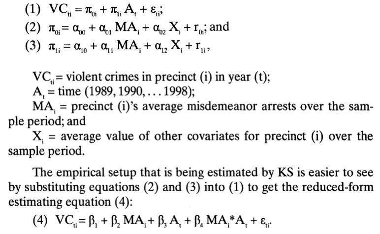
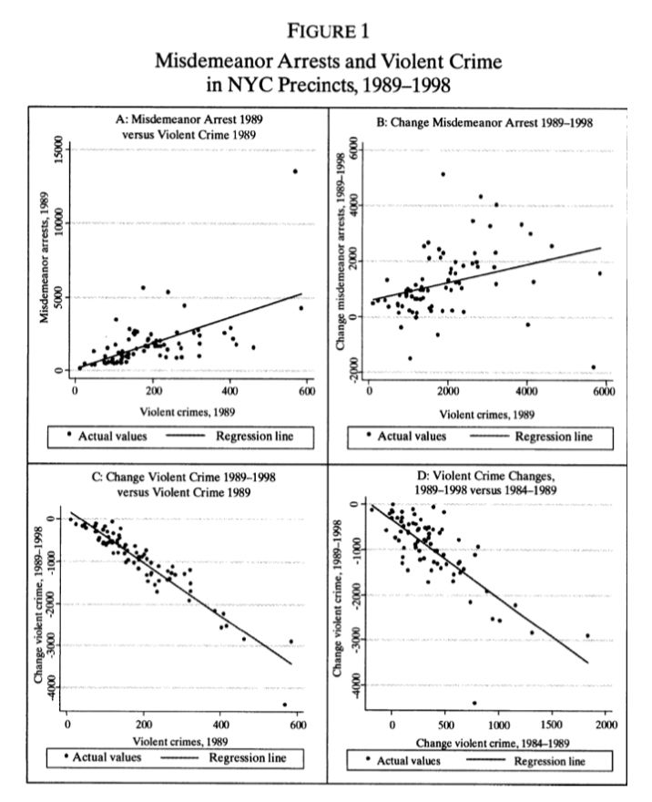
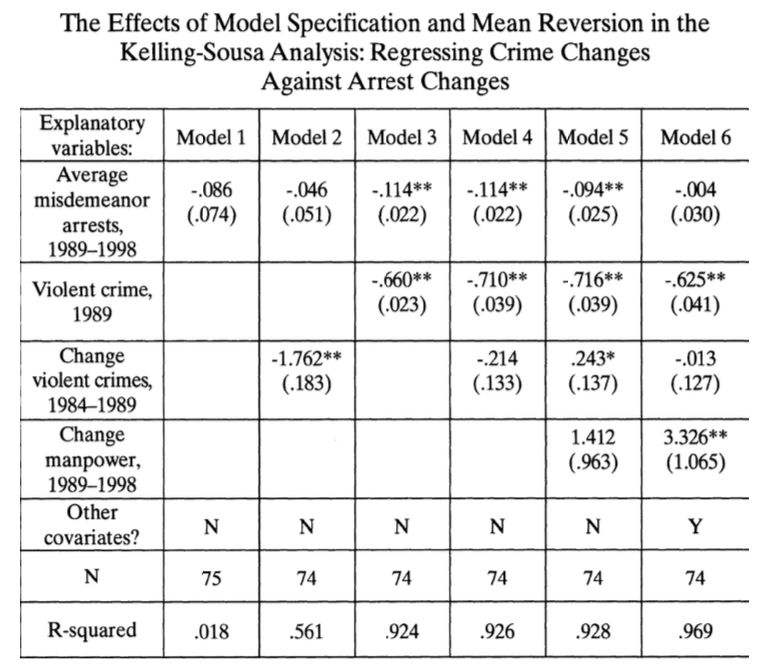
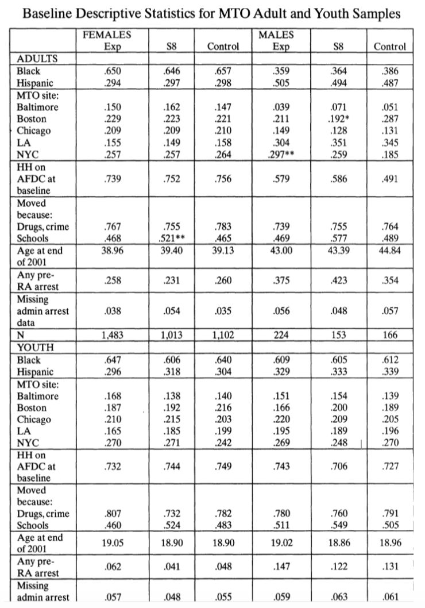
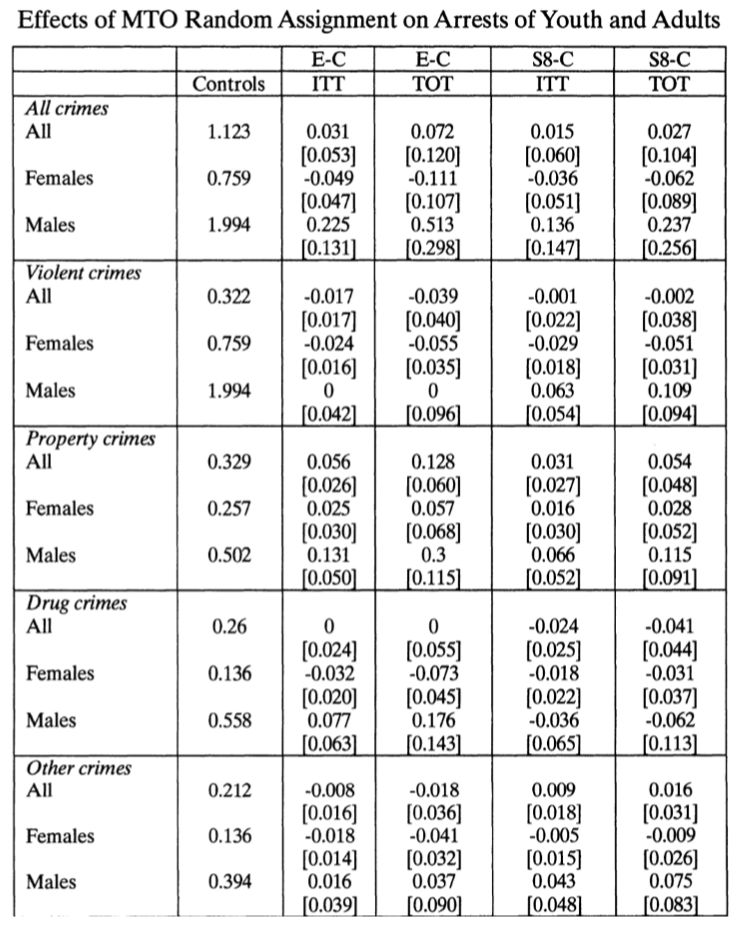

Harcourt&Jens：对破窗理论的重新审视|政观编译
收录于合集
文献来源: Harcourt, Bernard E., and Jens Ludwig. “Broken Windows: New Evidence from New York City and a Five-City Social Experiment.” The University of Chicago Law Review , vol. 73, no. 1, 2006, pp. 271-320
作者简介：
****Bernard E. Harcourt是哥伦比亚大学法学院教授、当代批判性思维中心主任，研究方向为当代批判性思维、政治与社会理论、刑法与程序等。
其个人主页参见：https://www.law.columbia.edu/faculty/bernard-harcourt
Jens Ludwig在该文发表时为乔治城大学公共政策副教授，现为芝加哥大学经济学教授、犯罪实验室主任、教育实验室主任，研究方向为社会政策，尤其是贫困、犯罪和教育等城市问题.
其个人主页参见：https://voices.uchicago.edu/jensludwig/

引 言
1982年，威尔逊和凯林共同提出了破窗理论。他们认为，将轻微的无序行为作为执法目标能对更为严重的犯罪行为起到预防作用。此后，纽约、芝加哥、洛杉矶等大城市在维护社会秩序方面都部分地参考了这一理论，但其效果尚未有相关研究能给予有力支持。
作者在文章中重新审视了破窗理论，对1989-1998年纽约市犯罪数据进行分析；同时，在纽约、芝加哥、洛杉矶、巴尔的摩和波士顿进行了一项名为“搬向机会”（MTO）的社会实验，数据分析和社会实验的结果都无法证明破窗理论的正确性，也无法证明“破窗警务”是对紧张的执法资源的有效利用。
“破窗理论”
社区混乱与越轨行为之间的关系很早就受到人们的重视，早期芝加哥社会学派就有许多关于社区和空间设置的专题论述，关注了意大利贫民窟和犹太人聚居区的问题。社区研究的一大发现是不同社区之间在犯罪率上存在巨大差异，而对这一发现的进一步思考面临着如何界定犯罪来源以及如何提出补救方案的困境。
“破窗理论”正是在这一背景下提出。20世纪60年代，心理学家津巴多首次提出并验证了这一理论；1982年，威尔逊和凯林提出，“秩序和犯罪通常不可避免地联系在一起，”乱扔垃圾、闲荡、涂鸦等社会无序行为会释放出信号：违法行为没有人管理，从而导致更为严重的犯罪。因此，努力减少混乱可能最终也会转化为犯罪活动的减少。由此，“破窗理论”以一种直接的方式回答了第一个疑问：无序导致犯罪。这一观点与城市衰败和社会传染理论相似；对于第二个疑问，威尔逊和凯林最初关于“破窗理论”的论述并没有提及，但是大多数政策制定者都理解了这一理论，并提出了“秩序维护”、“零容忍”或“生活质量”政策，凯林也在2001年提出了增加轻罪数量这一方法。
但是，学界又是怎么去检验“破窗理论”这一假说的有效性呢？目前为止，对“破窗理论”的经验性检验主要有两种形式。第一种形式是检验社区混乱与犯罪以及贫穷等与犯罪有关的因素之间的关系，第二种形式则关注“破窗警务”与犯罪率之间的关系。
对纽约犯罪数据的分析
在这一部分，作者对纽约市破窗执法的最新研究进行了讨论，包括2001年Kelling和Sousa的研究，以及2005年Corman和Mocan的研究。最后，作者认为2001年Kelling和Sousa的分析存在局限性，最终未能提供有关破窗执法的因果影响的信息；分析结果还表明，科尔曼和莫坎的分析不能支持破窗执法活动导致犯罪率下降的说法。
凯林和苏萨认为，之前对于破窗执法的研究缺乏足够的对照组，因此他们研究中的关键点在于不将纽约市视为一个整体，而是76个分开的“城市”，对应76个警区。他们对暴力犯罪与破窗警务、经济指标、年轻男性人口变化以及可卡因消费量的下降四个解释变量之间的关系进行比较后发现，地区一级的轻罪逮捕和暴力犯罪之间存在很强的负相关关系，指出了破窗警务在减少犯罪过程中的作用。作者对二者研究进行复盘时推测其依据的两级线性增长模型如下：

作者在重复凯林和苏萨验证过程的同时，还控制了辖区内空置住房单元的比例，将纽约警察局每年分配给每个辖区的警察人数纳入数据集，使其采用的数据集中包含了丰富的社会人口解释变量。因此，作者得到的结果与凯林和苏萨的也并不相同。作者发现了“牛顿犯罪定律”：犯罪率增长最快的城市，犯罪率下降也最快。对数据进行均值回归后作者认为，90年代前后犯罪率的上升和下降与可卡因市场的兴起和衰落有关。

对轻罪逮捕数量和犯罪率进行回归分析后，作者得出了与凯林和苏萨二人相反的结论：轻罪逮捕的增加伴随着暴力犯罪的增加——更多的轻罪逮捕，更多的犯罪。

科曼和莫坎的分析提供了与凯林和苏萨相似的观点，通过分析整个纽约市的月度数据，他们发现全市范围内的轻罪逮捕率和城市机动车盗窃率呈负相关。但科曼和莫坎的分析建立在单城市时间序列分析的基础上，缺乏比对；而同时其未采取相关政策的城市治安也在好转，因此解释力并不强。
“搬向机会”（MTO）实证分析 ****
“搬向机会”实验（MTO）是美国住房和城市发展部（HUD）自1994年开始主导的一项社会实验，主要是在纽约、洛杉矶、芝加哥、巴尔的摩和波士顿五个城市，随机向4600个低收入家庭分发住房券。这些家庭原本住在犯罪率高及社会无序行为较多的社区，住房券使其能够搬到社会治安较好的社区里。这一实验能够帮助检验社区混乱对于个人犯罪行为的影响，而这一因果关系也是困扰前人研究破窗理论效果的重要因素。
作者选取的调查样本中的家庭参加了1994年至1997年的“搬向机会”。在登记时，对各个家庭的信息以及关于每个孩子的一些具体信息进行了登记。青年和成人的描述性统计如下所示：

总的来说，大约三分之二的MTO参与者是黑人，在芝加哥和巴尔的摩的项目人口几乎全是黑人。参与MTO家庭相当贫穷，大约四分之三的家庭靠福利生活。四分之一的户主在18岁之前生了第一个孩子，只有一半多一点的户主有高中文凭或同等学历证书。约四分之三的家庭表示，黑帮和毒品是他们参加MTO项目的第一或第二重要原因，约一半的家庭表示，获得更好的学校是他们的首要两个原因之一。
但是，对逮捕记录和调查数据的分析表明， MTO的参与者们搬到一个不那么贫困、不那么混乱的社区后，群体中的犯罪行为并没有减少。

结 论 ****
从法律和科学的角度来看，理解破窗理论对无序和犯罪的影响是很重要的。破窗理论对于减少犯罪的作用可能也是存在的，因为这一假说背后的许多行为机制与社会传染理论是相似的。但是就本文而言，并没有找到证据支持破窗警务能够减少犯罪以及对于无序的干预能够改变犯罪行为这两个观点。
编译：康张城
审读：陆屹洲
编辑：郭静远